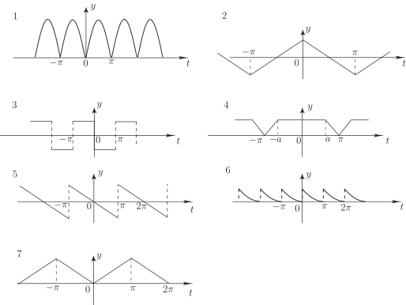

Long description: Block3fig10_3

Alt text: The image displays seven graphs illustrating different periodic and piecewise functions plotted against the variable \(t\) over the interval from negative pi to positive two pi.
This description was generated by AI and has not been verified by a human. If you spot an error, please use the feedback link below.
- The first graph shows a continuous, periodic wave function with several peaks and troughs oscillating over the interval from negative pi to positive two pi.
- The second graph depicts a periodic function that forms a series of connected 'V' shapes, crossing the horizontal axis at multiples of pi.
- The third graph illustrates a square wave pattern, defined by constant values between zero and pi, and then repeating this pattern.
- The fourth graph shows a triangular wave pattern, characterized by segments connecting points that form alternating slopes above and below the horizontal axis.
- The fifth graph presents a decaying sinusoidal-like pattern, starting with a negative value at negative pi and approaching zero at positive two pi.
- The sixth graph displays a series of connected triangular segments that resemble alternating, downward and upward sloping lines centered around the vertical axis.
- The seventh graph shows a non-periodic, piecewise function forming a series of connected, symmetrical 'A' shapes or triangles over the interval from negative pi to positive two pi.